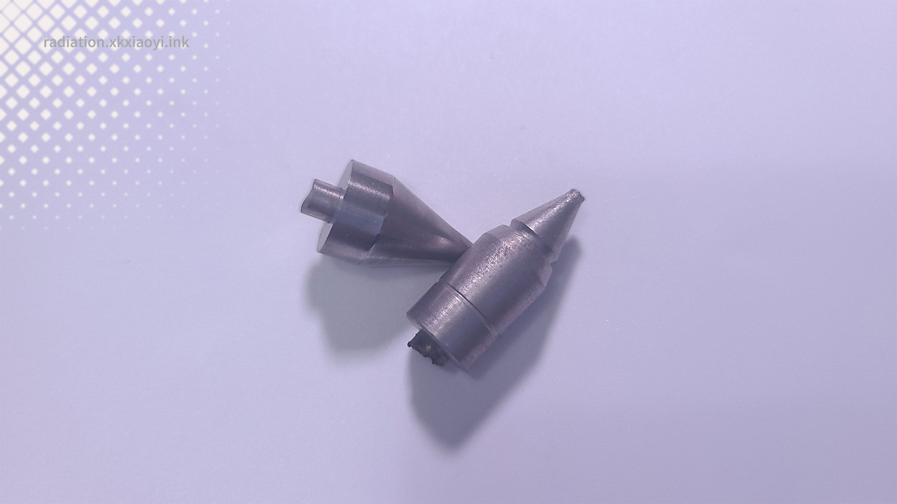
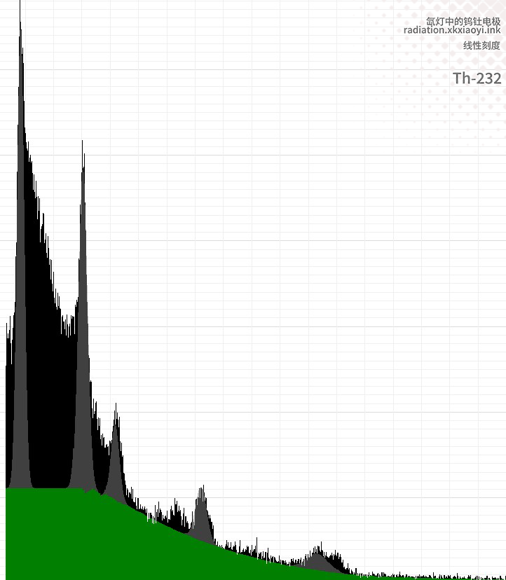
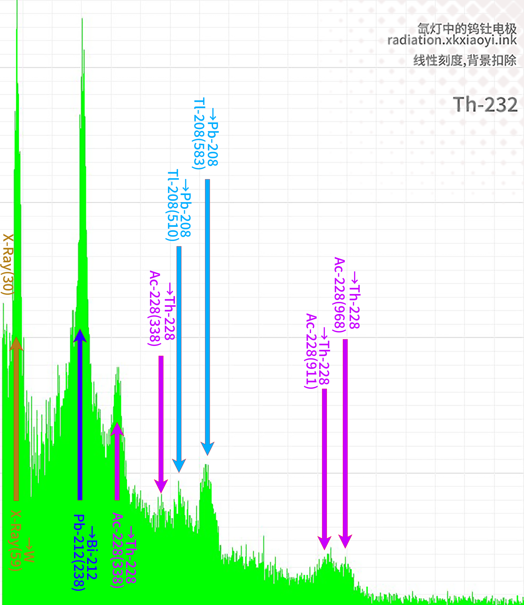
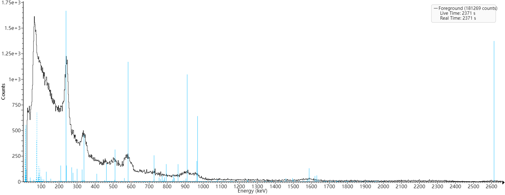

辐射光谱显示工具 WESViewer——钨钍电极
使用方法参见：WESViewer 说明


光谱选择
光谱显示
■ 光谱信息
■ 光标位置信息
| ch | ch |
|---|---|
| energy | keV |
| cps | |
| count |
■ 光标位置信息
| energy | keV |
|---|---|
| [A] cps | |
| [B] cps | |
| [B-A] cps |
■ 光标位置信息
| energy | keV |
|---|---|
| [1] cps | |
| [2] cps | |
| [3] cps | |
| [4] cps | |
| [5] cps |
■ 光标位置核素分析
| 能量 | 核素 | 半衰期 | 强度 |
|---|
■ 选择范围信息
| 开始通道 | ch |
|---|---|
| 结束通道 | ch |
| 开始ev | keV |
| 结束ev | keV |
| 总cps(含BG) | |
| 净cps(不包括BG) | |
| 总计数count(含BG) | |
| 净count(不包括BG) |
■ 选择范围信息
| 开始ev | keV |
|---|---|
| 结束ev | keV |
| [A] cps | |
| [B] cps | |
| [B-A] cps |
■ 选择范围信息
| 开始ev | keV |
|---|---|
| 结束ev | keV |
| [1] cps ■ |
|
| [2] cps ■ |
|
| [3] cps ■ |
|
| [4] cps ■ |
|
| [5] cps ■ |
预览：


背景扣除：


后处理：


Retpaĝo © 2022-2023.XiaoYi No One Knows the Future. Icon of WESViewer All rights reserved.